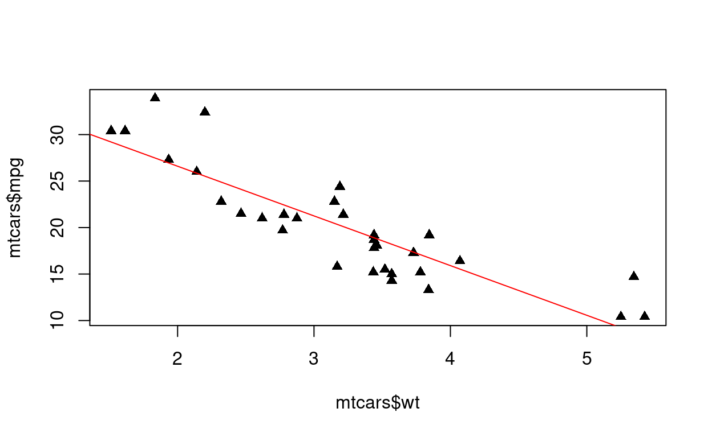
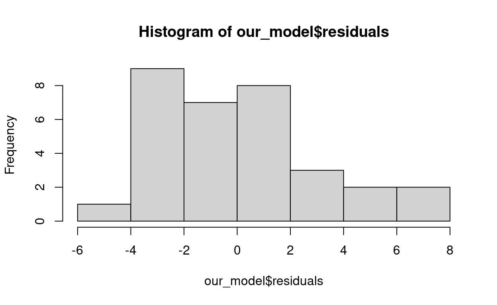

Learning Objectives
- Learn how to fit a linear regression with R using the lm() command
- Get comfortable with extracting coefficients
- Visualize output from lm()
Orientation of/for the workshop
This workshop assumes some basic familiarity with working in
R. My hope is that the previous lessons have provided the necessary background for this part of the short course. If there are any concerns about inability to understand this section, please let me know. I understand that this bridge program is a lot of information to take in all at once, but I promise that everything covered here will come upIn order to focus this workshop on coding, we developed this interactive website for you to play in a set of “sandboxes” and try your hand at implementing the methods we are discussing. When each code chunk is ready to run (all can be edited, many have the code prepared for you), you can click on “Run Code”. This will run
Rin the background on a server. Unlike previous sections of the course, there is no explicit grading feature for the exercises and challenge questions. This is due to the randomness that comes alongside statistical simulation. However, code solutionsare provided in some cases so you can see a solution - but you will learn more by trying the problems first before seeing the answer. Each sandbox functions independently, which means that you can pick up working at any place in the documents and re-set your work without impacting other work (this is VERY different from howRusually works!). Hopefully this allows you to focus on the code and what it does… The “Start over” button can be used on any individual sandbox or you can use the one on the left tile will re-set all the code chunks to the original status.This specific workshop is being taught by John Smith, but many others are taught by Greta Linse and Esther Birch and co-organized by the MSU Library, Statistical Consulting and Research Services (SCRS), and the Department of Mathematical Sciences. More details on us and other workshops are available at the end of the session or via https://www.montana.edu/datascience/training/#workshop-recordings.
Linear Regression Introduction
When I was in graduate school, I worked at the consulting center on campus called SAIG (Statistical Applications and Innovations Group). One day, during a discussion, my good friend and roommate Nathan Wycoff said something that has always stuck with me. When we were discussing useful resources for scientists, and what type of short courses we should be offering, he said that “an understanding of linear regression is the single greatest tool that a scientist can have”. Indeed, a deep understanding of linear regression is a great thing to have, and will give you an excellent foundation to build upon as a statistician.
In this brief module, we will talking about fitting linear regression
models in R. I suspect that most of you have fit some sort
of linear regression model in the past, but maybe not necessarily with
R. We will be using the built in lm() (linear
model) function in R. We will keep the module as practical
as possible – while there is much beautiful theory and interpretation
underlying linear models, this is best suited to your STAT505 course!
Additionally, your 505 class will also use the lm()
command, so this is largely intended to just get you to dip your toes
into the water.
A Motivating Example: mtcars
The dataset that we are going to use to practice with the
lm() function in R is called the
mtcars dataset. This is a dataset taken from the 1974
“Motor Trend” magazine. It contains information on:
mpg: Gas mileage (miles/gallon)cyl: Number of cylindersdisp: Engine displacement (in cubic inches)hp: Horsepower (measured as 1 HP = 746 Watts)drat: Ratio for rear axelwt: Weight of the car (in thousands of pounds)qsec: Time to completion for 1/4 milevs: Categorical; is the engine V-shaped?am: Categorical; is the transmission manual?gear: Number of non-reverse gearscarb: Number of carburetors
Our question: can we model the gas mileage as a linear function of one of these other variables that we have access to?
Suppose for a second that we only consider the continuous
variables: qsec, hp, disp,
drat, and wt. Pick one of these variables, and
we are going to do some exploration!
Challenge 1
Using the variable that you picked, do the following:
- Talk about whether you think that the variable will have a positive or negative relationship with gas mileage. For example, if you expect that gas mileage will INCREASE as weight increases, the relationship would be positive. If you think that gas mileage will DECREASE as weight increases, the relationship would be negative
- Use ggplot to create a visualization of the relationship in the mtcars dataset. Is the relationship positive or negative? Is this what you expected to see?
## load data
data(mtcars)
## challenge 1 code goes here!## load data
data(mtcars)
## i expect that as weight increase, gas mileage will DECREASE, meaning that we have a negative relationship.
mtcars %>% ggplot(aes(x = wt, y = mpg)) + geom_point()
## this is exactly what we see!Thinking About a Model
Now we are going to think about how we would model mpg
as a function of our other variable. For clarity of presentation, let’s
assume that we want to model mpg as a function of
wt. We posit that there is a linear relationship, so maybe
our model has the form:
\[
mpg_i = \beta_0 + \beta_1 wt_i + \epsilon_i, \epsilon_i \sim N(0,
\sigma^2)
\] This model says that we believe that mpg has a
linear relationship with weight. Thinking about this
geometrically, \(\beta_0\) is the
y-intercept of our line, and \(\beta_1\) is the slope of our
line. For this particular example, \(\beta_1\) would measure how much we expect
the mpg to change as we increase wt by one
unit (1,000 lbs). For example, if \(\beta_1 =
5\), we expect a 2,000 lb car to get 5 miles per gallon more on
average than a 1,000 lb car. Similarly, if \(\beta_1 = -5\), we expect a 2,000 lb car to
get 5 miles per gallon less on average than a 1,000 lb car.
Challenge 2: Pop Quiz
Based on your plot from question 1, do you expect beta1 to be positive or negative? Why is this?
## load data
data(mtcars)
## challenge 2 code goes here!## load data
data(mtcars)
## i expect that as weight increase, gas mileage will DECREASE, meaning that we have a negative relationship.
mtcars %>% ggplot(aes(x = wt, y = mpg)) + geom_point()
## this is exactly what we see!
## since the relationship is negative, we expect beta1 to be negative!The model that we looked at (shown below as a reminder) is an example
of a simple linear regression model. This is the special case
where we have one response (mpg) and one predictor
(wt).
\[ mpg_i = \beta_0 + \beta_1 wt_i + \epsilon_i, \epsilon_i \sim N(0, \sigma^2) \]
Now, let’s learn how to fit this model in R, using the
lm() function!
The lm() function
The lm() function (linear model) is a built-in
R function that can be used to fit linear regression
models. The lm() function has the following syntax
expectations:
our_model <- lm(response ~ predictor1, data = our_data)The syntax may be a bit different than what we have seen in our
previous R excursions. The tilde (\(\sim\)) creates something called a
formula, which R will use to figure out what
should be treated as the response variable in our linear regression
model, and what will be treated as the explanatory variables. The object
to the left of the tilde will be treated as the response, and the
objects(s) to the right will be treated as the explanatory variables /
predictors. For now, we only have one predictor, but we will see how to
add more later!
Challenge 3
Change the code above by choosing the appropriate values for response, predictor, and data. Then, run the code to fit your first linear model!
## load data
data(mtcars)
## challenge 3 code goes here!## load data
data(mtcars)
## change values and fit our model!
our_model <- lm(mpg ~ wt, data = mtcars)Congraulations! We have fit our first linear regression model! Now, let us take a look at what information the regression model gives to us:
our_model##
## Call:
## lm(formula = mpg ~ wt, data = mtcars)
##
## Coefficients:
## (Intercept) wt
## 37.285 -5.344To start with, we can simply print out our_model to the
console. This tells us the model that was fit
(lm(formula = mpg ~ wt, data = mtcars)) and gives us
estimates for \(\beta_0\) (Intercept)
and \(\beta_1\) (Slope).
our_model is actually a list object that
contains a ton of information…
names(our_model)## [1] "coefficients" "residuals" "effects" "rank"
## [5] "fitted.values" "assign" "qr" "df.residual"
## [9] "xlevels" "call" "terms" "model"Our lm() output has information on:
- Coefficients
- Residuals
- Effects
- Rank
- Fitted values
- Assignment
- The QR decomposition used during model fitting
- The residual degrees of freedom
- Different x levels
- The call used
- The model fit
This is, frankly, an information overload! Now, let us see how to succinctly get some information out of this absolute behemoth of an object.
Getting Information from an lm() call
In this section, we will talk about some of the common elements that
we might want to extract for our call to the lm()
function.
First and foremost, we might want to take a broad overall look at our
model. What are the regression parameter estimates? What is the standrd
error associated with our estimates? How is our model \(R^2\)? For this, the summary()
function will be a good place to start!
summary(our_model)##
## Call:
## lm(formula = mpg ~ wt, data = mtcars)
##
## Residuals:
## Min 1Q Median 3Q Max
## -4.5432 -2.3647 -0.1252 1.4096 6.8727
##
## Coefficients:
## Estimate Std. Error t value Pr(>|t|)
## (Intercept) 37.2851 1.8776 19.858 < 2e-16 ***
## wt -5.3445 0.5591 -9.559 1.29e-10 ***
## ---
## Signif. codes: 0 '***' 0.001 '**' 0.01 '*' 0.05 '.' 0.1 ' ' 1
##
## Residual standard error: 3.046 on 30 degrees of freedom
## Multiple R-squared: 0.7528, Adjusted R-squared: 0.7446
## F-statistic: 91.38 on 1 and 30 DF, p-value: 1.294e-10The output from summary(our_model) gives us all of these
things! It contains information on the model call, some summaries about
the residuals, information about the estimated coefficients, results of
hypothesis tests (which we won’t get into here), and estimates of the
residual standard error and \(R^2\).
This is usually a great place to start, but sometimes we want to extract
even more!
Suppose that we want information about the regression coefficients
themselves. Perhaps we are performing a lot of analyses and we want to
be keep track of \(\hat{beta}_{1}\) for
many different models that we fit. Or, maybe we want to see which of the
models has the lowest variance estimate for the residuals. This
information is all stored in our output from lm(), we just
need to know where to find it!
To extract \(\hat{\beta}_0\) from an
lm() call, we can use:
beta0_hat <- our_model$coefficients[1]
print(paste('Our beta0 estimate is', beta0_hat))## [1] "Our beta0 estimate is 37.285126167342"Note that there is a mismatch between our ordering of regression
coefficients (\(\beta_0\), \(\beta_1\), etc) and the way that
R stores things (\(1, 2, 3,
...\)). So, the first element of
our_model$coefficients will have \(\hat{\beta}_0\), the second will have \(\hat{\beta}_1\), etc. Which means that in
order to get \(\hat{\beta}_1\), we
would use….
beta1_hat <- our_model$coefficients[2]
print(paste('Our beta1 estimate is', beta1_hat))## [1] "Our beta1 estimate is -5.34447157272268"our_model$coefficients will notably only have
information about the coefficient estimates… What if we want our
estimate of \(\hat{\sigma}^2\)? We can
extract this by using the following:
sigma_sq_hat <- summary(our_model)$sigma^2Now that we have learned a bit about how to summarize and extract various regression estimates, we will talk about how to visualize output from our regression models!
Visualization
As we have already learned, data visualization is an absolute necessity in statistics. It allows us to take our data story and succinctly summarize it into something that other people can see and understand. This is no different for linear regression: we want to create visualizations of our model so that others can see them.
Similar to how we may start off by using the summary()
function immediately after fitting a linear regression model, we may
also want to get a visualization of various diagnostic plots.
While these are important, this is a can of worms that I am not
particularly keen on opening right now. These types of things deserve a
lengthy discussion, and there are pros and cons to different diagnostic
plots that you will learn about in your STAT505 course this fall.
Instead, I will just show you how to obtain diagnostic plots
from R’s lm() output.
To get a handful of default diagnostic plots, we can use the following:
plot(our_model)These diagnostic plots include, in order:
- Residual vs Fitted Values plot
- A Normal Quantile-Quantile plot
- A Scale-Location plot
- A plot of residuals vs leverage
While I won’t discuss these at length, I wanted to make sure that you all were aware of them, and it felt like a discussion on visualization would be incomplete without mentioning them.
We can also create visualizations of our regression line quite easily, at least in the case of 1 response and 1 explanatory variable. For example, we can start with a scatterplot:
plot(mtcars$wt, mtcars$mpg, pch = 17)Then, we can extract our coefficients using what we learned in the
previous section and use the abline() function!
plot(mtcars$wt, mtcars$mpg, pch = 17)
abline(a = our_model$coefficients[1],
b = our_model$coefficients[2], col = 'red')
This gives us a visualization of how well our regression line fits our data.
The final visualization that we will talk about is looking at
histograms of the residuals. This is not a substitute for a formal
treatment of whether or not the residuals are roughly normal, but it
gives us a good sanity check! As we learned earlier, we have access to
the residual information in the list that is output from
lm(). So, to create a histogram of the residuals, we can
simply do:
hist(our_model$residuals)
While we covered a few ways of visualizing regression output, there are hundreds of other ways. This was not intended to be an exhaustive list, but rather to teach you a couple of basic things. I am sure that Mark, the resident data viz expert, will teach you many more during this upcoming semester!
Practice
In this section, we will explore more about the lm()
command and get practice with extracting coefficients and creating
plots.
So far, we have only fit a linear regression model that uses one predictor. Recall that the syntax for this was:
our_model <- lm(response ~ predictor1, data = our_data)However, we can also include additional predictors by using a
+ in the formula. The syntax would then become:
our_model <- lm(response ~ predictor1 + predictor2, data = our_data)We can do this arbitrarily and include as many as we want, even!
our_model <- lm(response ~ predictor1 + predictor2 + predictor, data = our_data)
## and so on ad infinitum, or until we run out of predictors :)This leads us to our final challenge question!
Challenge 4
Choose another continuous variable from the dataset that you haven’t used yet. Modify the code to fit a regression with two predictors. Output the summary. How does it differ from our first model?
## load data
data(mtcars)
## challenge 4 code goes here!## load data
data(mtcars)
## change values and fit our model!
our_model2 <- lm(mpg ~ wt + hp, data = mtcars)Try this with several different options for the second continuous variable. Which ones decrease the slope of our regression line? Which ones increase it? Do you have a hypothesis for why this is the case?
Montana State University R Workshops Team
These materials were adapted from materials generated by the Data Carpentries (https://datacarpentry.org/) and were originally developed at MSU by Dr. Allison Theobold. The workshop series is co-organized by the Montana State University Library, Department of Mathematical Sciences, and Statistical Consulting and Research Services (SCRS, https://www.montana.edu/statisticalconsulting/). SCRS is supported by Montana INBRE (National Institutes of Health, Institute of General Medical Sciences Grant Number P20GM103474). The workshops for 2020-2022 were supported by Faculty Excellence Grants from MSU’s Center for Faculty Excellence.
Research related to the development of these workshops appeared in:
- Allison S. Theobold, Stacey A. Hancock & Sara Mannheimer (2021) Designing Data Science Workshops for Data-Intensive Environmental Science Research, Journal of Statistics and Data Science Education, 29:sup1, S83-S94, DOI: 10.1080/10691898.2020.1854636
The workshops for 2022-2023 involve modifications of materials and
are licensed CC-BY.  This work is licensed under a Creative Commons
Attribution 4.0 International License.
This work is licensed under a Creative Commons
Attribution 4.0 International License.
The workshops for 2022-2023 involve modifications of materials and are being taught by:
Greta Linse
- Greta Linse is the Interim Director of Statistical Consulting and Research Services (https://www.montana.edu/statisticalconsulting/) and the Project Manager for the Human Ecology Learning and Problem Solving (HELPS) Lab (https://helpslab.montana.edu). Greta has been teaching, documenting and working with statistical software including R and RStudio for over 10 years.
Esther Birch
- Esther Birch is an instructor at MSU who has been teaching Introduction to Statistics and Intermediate Statistics full-time since 2018, when she received her M.S. in statistics. Additionally, she is the Director of the Math Testing Center. Esther greatly enjoys teaching coding in R, as well as making visualizations. Outside of statistics, she can be found puttering in her garden or losing balls on the golf course.
Fall 2022 instructors also included:
Sara Mannheimer
- Sara Mannheimer is an Associate Professor and Data Librarian at Montana State University, where she helps shape practices and theories for curation, publication, and preservation of data. Her research examines the social, ethical, and technical issues of a data-driven world. She is the project lead for the MSU Dataset Search, and she is working on a book about data curation to support responsible qualitative data reuse and big social research.
Harley Clifton
- Harley Clifton is an undergraduate senior pursuing a degree in Mathematics (Statistics Option) with a minor in Psychology. She enjoys teaching nuanced coding skills and Data Visualization strategies through her experience as a Teaching Assistant for STAT 216 and STAT 408. Harley recently attended the Summer Institute in Biostatistics and Undergraduate Data Science at the University of California Irvine, funded by the National Institute Of Allergy And Infectious Diseases of the National Institutes of Health (under Award Number R25AI170491). Her areas of interest include quantifying behaviors and societal attitudes, behavior modification to reduce discrimination, Deaf culture and history, and women’s health.
Eliot Liucci
- Eliot Liucci is a senior in the Mathematics (Statistics Option) Program here at Montana State University. He is currently working on a research project with the Mathematics and Statistics Center to analyze the impact of different time based variables on overall MSC foot traffic and usage. Throughout his experience as a Teaching Assistant for STAT 216 and STAT 217, Eliot has gained a deeper understanding of statistical methods and educational approaches. Eliot will graduate at the end of Fall 2022 with his bachelors and will start the M.S. in Statistics program in Spring 2023. His interests include environmental statistics, video games, and he restores vintage automobiles and motorcycles in his free time.
Mark Greenwood
- Mark Greenwood is a Professor of Statistics in the Department of Mathematical Sciences at Montana State University and the former Director of Statistical Consulting and Research Services (https://www.montana.edu/statisticalconsulting/). His research interests have involved statistical methods and applications in environmental sciences, education, and biological sciences. Recent work has involved researching diagnostic methods for Multiple Sclerosis. His current research grants include funding from the Mountain West IDeA Clinical and Translational Research - Infrastructure Network (National Institute of General Medical Sciences Grant 5U54GM104944-08) and a grant from the National Multiple Sclerosis Society (RG-1907-34348).
JW Smith
- John is an Assistant Professor of Statistics in the Department of Mathematical Sciences at Montana State University. His research interests include Bayesian hierarchical modeling, Gaussian Process surrogate modeling, Time Series Analysis, and the simulation, calibration, and inference of large scale dynamical systems, particularly for applications in ecology. The creation of the short course material for the statistical simulation module and the execution of the bridge program was supported by Montana State University’s Center for Faculty Excellence grant. In addition, Dr. Smith receives support from the National Science Foundation AI Institute for Dynamical Systems grant.